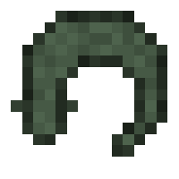
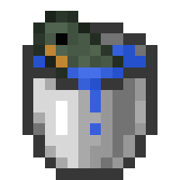
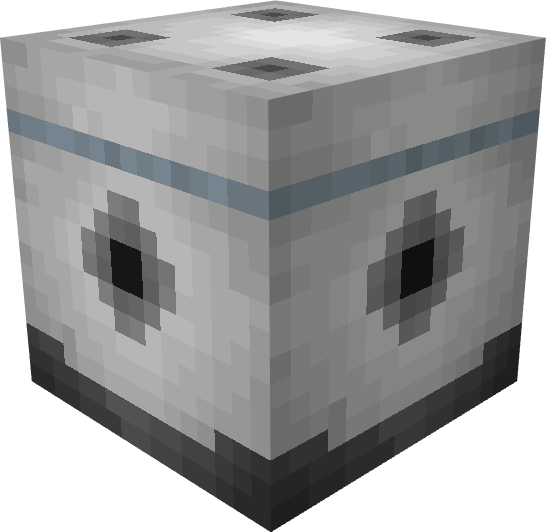
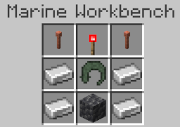

Electric Eel
The electric eel is a rare fresh water fish that provides a hazard to the player. It drops a item that is needed to craft
the Electrode block and the mob itself is essential when using the electrode.
Spawning
Electric eels are rare solitary fish that spawn exclusively in rivers. The way they spawn naturally is by replacing some naturally spawning aquatic mob. In rivers, each salmon has a chance to be replaced with an electric eel. The table below shows the spawn rates of the electric eel in the biome it spawns in.
| Biome | Spawn Chance (Replacement Chance) | Group Size |
|---|---|---|
| River | 5% (Salmon) | 1 |
Items
Item drop chances
Electric eels can drop 2 items, bone meal or the electric eel (item). Upon death, it is guaranteed to drop 1 electric eel (item), only if a player kills it. Similarly, it will only drop 1-2 bone meal (equal chance for both) if the player kills it. Below is a table that shows the item drop chances.
| Item | Chance (If killed by player) | Count |
|---|---|---|
| Electric Eel | 100% | 1 |
| Bone meal | 100% | 1 - 2 |
Electric Eel (Item)

Electric eel (item) is an item that is exclusively dropped by the electric eel, stackable up to 64 in one item slot. It has a 100% chance to be dropped by the electric eel if the player kills it. Below are the food stats of the electric eel:
- Nutrition: 2
- Saturation: 0.4
- Effects:
- Instant Damage I
The electric eel (item) is also a necessary item used in crafting the Electrode which is explained further in this article.
Behavior
The electric eel tends to stay at the bottom of the river bed during the day, hence why it is called a bottom dweller. However, during the night it becomes more active.
If a player gets close to the eel, it won't attack or deal damage to the player. However, if the electric eel receives damage that is not enough to kill it, it will release a burst of electric energy dealing true damage (damage not affected by armor or potion effects) to all mobs within a certain range. Below are the attack stats of the the electric eel's Electric Pulse:
- Attack Cooldown: None (only triggers if receiving damage)
- Attack radius:
- 5 blocks (Player)
- 8 blocks (Non-player mobs)
- Attack Type: Area of Effect
- Attack damage (True damage):
- Players (Survival or Adventure mode): 4 HP (2 hearts)
- Other mobs: 6 HP (3 hearts)
It is also worth noting that if an Electrode is within a 5 block radius when the electric eel does it's Electric Pulse attack, the electrode will be destroyed.
Obtaining Electric Eels
Bucket of Electric Eel

Because of their size they can actually be kept as pets and transported via water buckets. The player only needs to use a bucket of water near the electric eel to scoop it up, replacing their water bucket with a bucket of electric eel. Like with vanilla Minecraft mobs, right clicking the ground with the bucket of electric eel will place water and the electric eel, giving the player an empty bucket. When an electric eel is placed down via the bucket, it won't despawn, unlike wild, naturally spawning electric eel who will despawn when the player leaves the area.
Transporting the electric eel is also especially useful since they are necessary for making the Electrode work, which is further elaborated on in the section below.
Electrode Block

The electrode is a redstone utility block exclusively added to Blue Depths. It has the ability to trigger redstone and redstone contraptions if it receives an electric signal from the electric eel, which is simply done if there is an electric eel within a 5 block radius of the electrode. This makes it an excellent way of having some kind of random redstone triggers without having to rely on large redstone contraptions. The way to tell if the electrode has been triggered (and thus can activate redstone) without needing to use redstone is by seeing if the holes of the electrode are lighting up. If you do see a light coming out of the holes, the electrode can activate redstone.
Crafting
In order to craft the electrode block, you will need to use the Marine Workbench to craft the the block, as a regular crafting table will not work. Below lists the necessary items needed to craft the electrode (not counting the Marine Workbench since these are the ingredients):
- Redstone Torch x1
- Iron Ingot x4
- Cobbled Deepslate x1
- Lighting Rod x2
Once you have all the ingredients needed, you must place the items in this pattern INSIDE the Marine Workbench to craft the electrode:

Utility
Besides what was already said in the introductory part of the Electrode, there are a few more things to note. As already stated, the electrode will activate if an electric eel is within 5 block radius, which will be indicated by the holes of the electrode lighting up. When active, the electrode will be able to activate any redstone or redstone contraption it is connected to (pretty much any redstone/redstone contraption next to it). If the electric eel leaves that 5 block radius, the electrode will deactivate, and any redstone connected to it will become inactive.
It is worth noting that if an electric eel receives damage that doesn't immediately kill the electric eel within a 5 block radius of the electrode, the electrode will become overloaded and explode. The explosion itself won't deal damage to any player or mob, and it will drop the electrode as an item after it explodes.
History
Development History
| Datapack Version | Addition/Change |
|---|---|
| 1.2.0 (Roaring Rivers Part 2: Shocking Snap) |
|